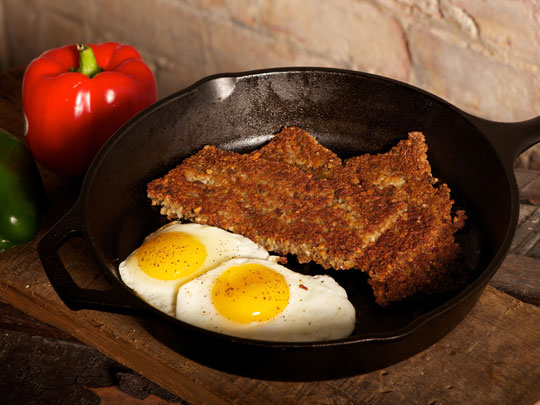

Morning arRays and breakfast Hashes
January 25, 2016
Dan Heintzelman
Arrays and Hashes - Breakfast of Champions
When it comes to storing and organizing content in ruby, and in fact pretty much any coding language, Arrays and Hashes are the bread and butter. How many times, when interacting with a program, have you matched both an item with a value. First name is Dan, last name is Heintzelman etc. etc. etc. Most likely, that information was stored in a Hash. Also, if you've ever imputted an ordered list of values into a program where the actual "order" of elements was important, that data was stored in an array.
The most important thing is that Arrays and Hashes are both ways of storing multiple values and being able to easily retrieve them. The fundamental difference between an Array and a Hash is how items are stored. This important to know so that you can know in which situations you will call upon the power of each one.
Lesson(0) - The Array
Since this blog is clearly breakfast themed, I will start with an example pertaining to breakfast. Yesterday when I woke up to my belly grumbling, I knew I needed to pick up some breakfast items from the store. I took out my notepad and I wrote a list of items, numbering them from 1 to 10. If I were to store these in an array, I could simly use the following code.
breakfast = [] #this establishes a new array
breakfast = ["Eggs", "Bacon", "Butter","Biscuits","Goetta"]
There you have it! I've just created an array that contains all of my breakfast items. Now, the critical thing to know here is how one would access items in this list. For instance, if I were to type:
puts "Dan's favorite breakfast item is " + breakfast[4] + "."
I would be saying my favorite breakfast item is Goetta. By the way, if you've never tried it, I highly recommend it! The most important takeaway here is not that Goetta is delicious, but that items in an array are automatically assigned keys that you can use to access them, this is called the index. It starts from 0 and counts up. So even though Goetta is the 5th item, it is the 4th in the index.
Now, what if you don't care as much about the actual order of items, or you want to have more intuitive ways to call items. Then we might want to use a Hash...(Belly grumbles as I think of corn beef hash)
Hash
Let's use the same motif as before to describe why one would want to make a hash. Let's say that I'm developing a food ordering app for breakfast( *write down idea ). I might want to give someone options for their preffered type of carb, preferred type of protein, preffered beverage, etc.
If I'm storing these types of values, I want to use a key that is easy to call upon. That is the power of hashes, I can make my own key and value!. So for the following app if I chose my desired options it woud look something like this.
breakfast_order = {
:beverage => "Coffee"
:protein => "Goetta"
:eggs_type => "Over Easy"
:toast => "Wheat"
}
Pretty neat!, right? Dan loves to start his morning with a breakfast_order[:beverage], breakfast_order[protein], and with his breakfast_order[eggs_type] next to a delicious piece of breakfast_order[toast], toast! Okay, doesn't sound efficient, but If I were taking thousands of orders a day, I could print a coherent string for thousands of people pretty easy.
